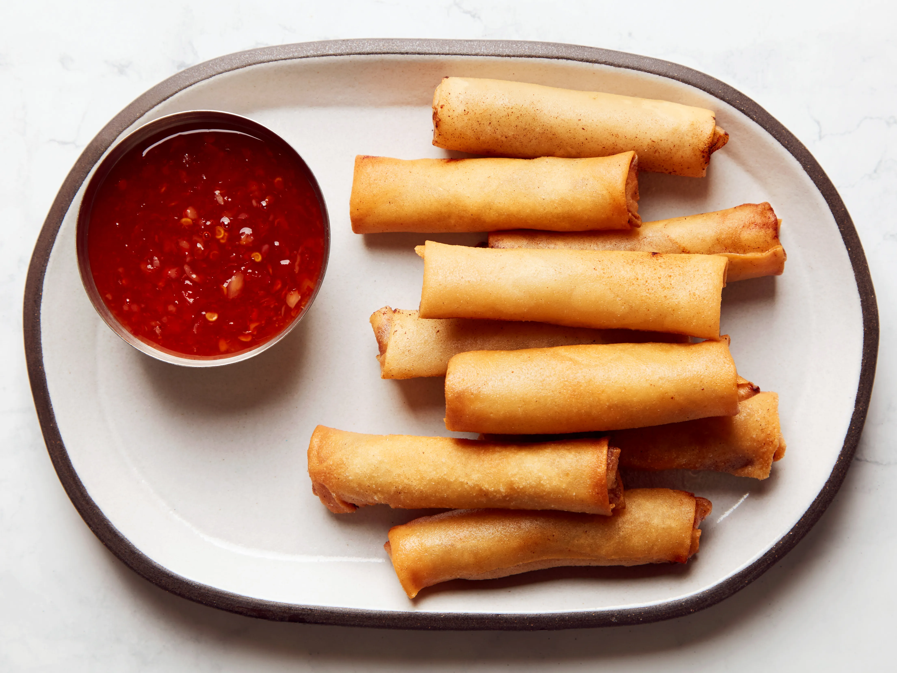

• Lumpia is usually made with a savory filling of meat, vegetables, and spices wrapped in a thin, egg based wrapper.
• The filling is then rolled and wrapped in the wrapper and is either deep-fried or served fresh.
• The deep-fried version is usually crispier and more flavorful.
• Lumpia is usually served as an appetizer or snack, but it can also be served as a main dish.
• It can be eaten alone, or with a dipping sauce, such as sweet chili sauce, peanut sauce, or soy sauce.
• Lumpia is a popular dish in our country and is often served at parties and special occasions.
• It can also be found in our restaurants and food stalls around the world, making it a popular and delicious way to
experience Filipino cuisine.